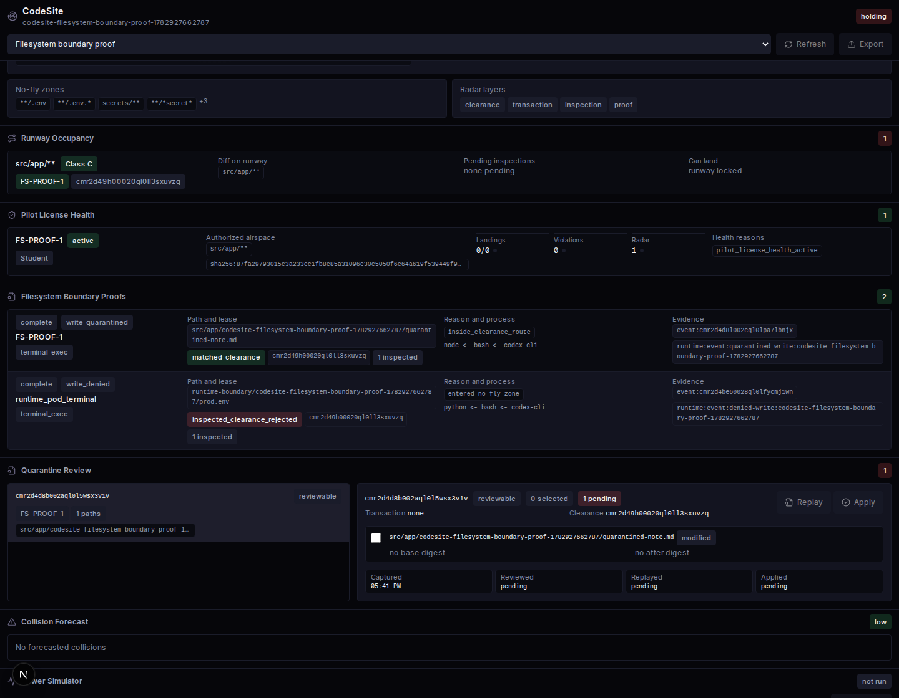
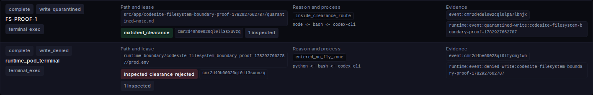
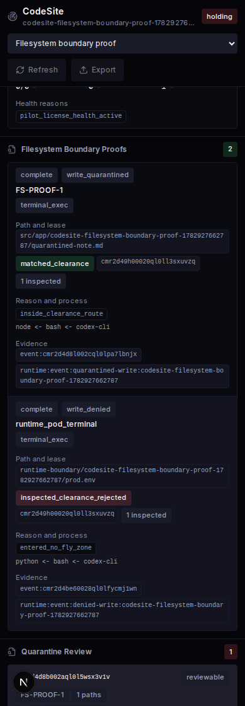

Workspace codesite-filesystem-boundary-proof-1782927662787, project cmr2d44030000ql0lrjfk3xdp.
| Disposition | Path | Lease | Reason | Process | Evidence |
|---|---|---|---|---|---|
| write_quarantined | src/app/codesite-filesystem-boundary-proof-1782927662787/quarantined-note.md |
cmr2d49h00020ql0ll3sxuvzq | inside_clearance_route | node <- bash <- codex-cli | event:cmr2d4d8l002cql0lpa7lbnjx, runtime:event:quarantined-write:codesite-filesystem-boundary-proof-1782927662787 |
| write_denied | runtime-boundary/codesite-filesystem-boundary-proof-1782927662787/prod.env |
inspected_clearance_rejected | entered_no_fly_zone | python <- bash <- codex-cli | event:cmr2d4be60028ql0lfycmj1wn, runtime:event:denied-write:codesite-filesystem-boundary-proof-1782927662787 |


